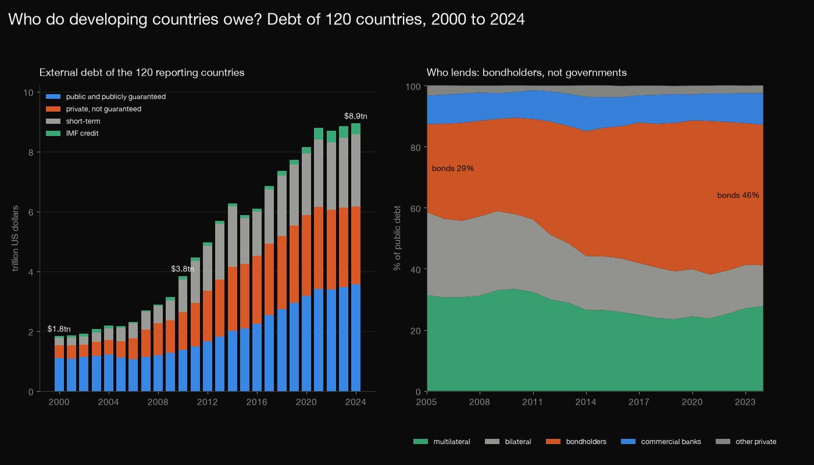
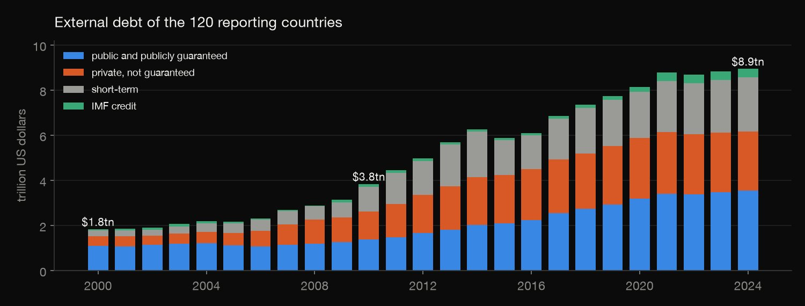
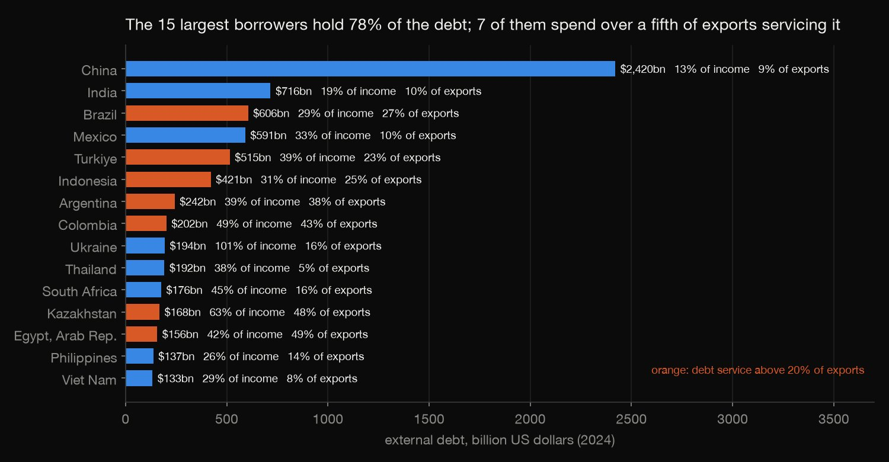
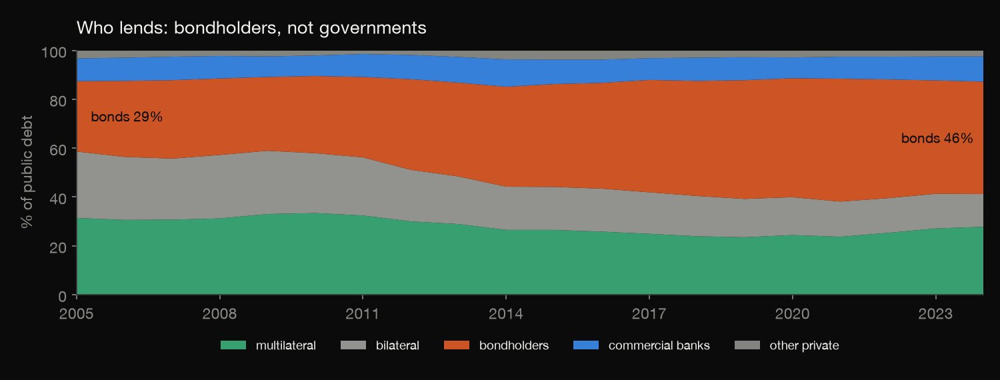
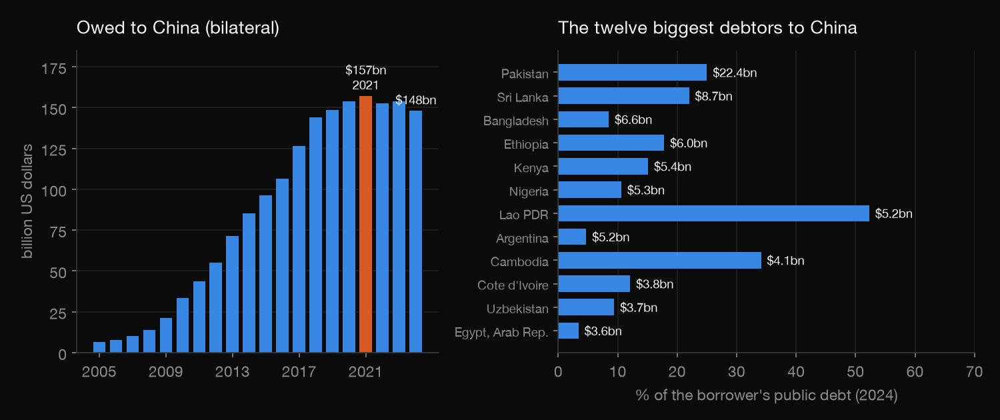
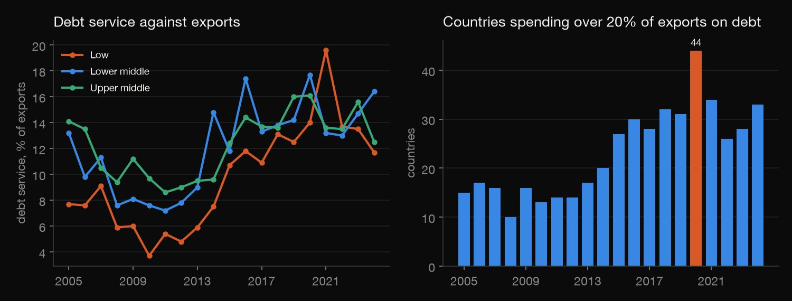

SQL · Debt statistics · 2026-10
Who Do Developing Countries Owe?
Reported external debt of 120 low- and middle-income countries grew from $1.8 trillion in 2000 to $8.9 trillion in 2024. In SQL: who the big borrowers are, who lends (bondholders now hold 46% of public debt), how much is owed to China, and which countries spend over a fifth of their exports on debt service.

Values are current US dollars, so growth mixes new borrowing, exchange rates and inflation. The data is what borrowers report: advanced economies are not covered, and unreported loans, including some Chinese lending, are missing, so the China figures are a floor. Debt service includes IMF charges, and one year can be dominated by a one-off payment. The 20% cut-off is illustrative, not an official threshold.
01 — The problem
Headlines say developing countries are drowning in debt, or that China is their biggest lender, or that bond markets have replaced governments. What do the World Bank's own numbers show?
The Bank publishes the external debt of low- and middle-income countries, by type of creditor, back to 1970. The questions follow DataCamp's "Analyze International Debt Statistics" project; the data is the Bank's current release (December 2025), through 2024.
02 — What I built
The Bank's International Debt Statistics for the 120 countries that report, loaded into DuckDB, and eight SQL queries, one question each:
- The stock: total debt and its parts, year by year.
- The borrowers: the 15 largest, and how heavy their debt is.
- The lenders: public debt by type of creditor, and by income group.
- China: bilateral debt owed to China, by year and by borrower.
- Debt service: how much of export earnings goes to repayments.
- Check:
check.pyrebuilds every table in plain Python, with no SQL, and 841 numbers agree.
03 — How it was built
- 01
Download the Bank's debt statistics
The Bank's API returns each series for every country and year in one call: 14 series (total debt, public debt by creditor type, short-term debt, IMF credit, debt service, exports, national income, and bilateral lending by China), 79,536 numbers, plus the country list with income groups. Fields are read by name because their order changes with the filters used. The 750 KB snapshot (release of 3 December 2025) is committed, since the Bank revises its data.
v = {x["concept"]: x["id"] for x in r["variable"]} # fields by name: their order changes with the filters used - 02
Add up the stock
Query 1 sums every country's debt each year (not the Bank's regional aggregates). The parts are public and publicly guaranteed debt, private debt without a guarantee, IMF credit and short-term debt. They add up to the total, which the query checks: a column called unexplained is zero in every year.
ROUND(100 * (total / LAG(total) OVER (ORDER BY year) - 1), 1) AS growth_pct, - 03
Rank the borrowers
Query 2 ranks the 2024 borrowers by debt and by debt against national income, with each one's share of the total and a running total, using window functions. Debt service against exports shows which large borrowers are under pressure.
RANK() OVER (ORDER BY debt DESC) AS rank_by_size, RANK() OVER (ORDER BY debt / gni DESC) AS rank_by_debt_to_gni, - 04
Follow the lenders
Query 3 splits public debt by who is owed: multilateral lenders such as the World Bank, bilateral lenders (governments), bondholders, commercial banks and other private creditors, across years and across borrower income groups.
SUM(i.value) FILTER (WHERE i.series = 'DT.DOD.PBND.CD') AS bonds, - 05
Trace the debt owed to China
The Bank also reports bilateral debt by creditor country. Query 4 follows the stock owed to China from 2005 and finds its peak with a window function, then lists the borrowers most exposed.
year = FIRST_VALUE(year) OVER (ORDER BY owed DESC) AS is_peak_year - 06
Measure the repayment burden
Query 5 divides debt service by export earnings, by income group and by country, and counts the countries above an illustrative 20% line each year.
- 07
Rebuild it without SQL
check.pyrereads the raw snapshot with plain Python (dictionaries and the csv module, no DuckDB, no SQL, no pandas) and recomputes every table: totals, shares, growth, ranks, running totals, the China peak, the ratios and the counts above 20%. The results are rounded to one decimal, so each comparison allows half a unit in the last place. All 841 numbers agree.def same(label, got, want, tol=0.0501): """results are rounded to one decimal; allow half a unit in the last place"
04 — Results

The stock grew almost fivefold. The reporting countries owed $1.83 trillion in 2000, $3.84tn in 2010 and $8.94tn in 2024 (current dollars). In 2024, 39.8% was public and publicly guaranteed, 29.2% private and not guaranteed, 26.8% short-term and 4.2% IMF credit.

A few borrowers dominate, and size is not weight. China owes $2.42tn (27.4% of the total), India $716bn, Brazil $606bn, Mexico $591bn and Turkiye $515bn: five countries hold 55.0%, fifteen hold 77.9%. China's debt is 13% of national income and its debt service 9% of exports. Seven of the fifteen spend over 20% of export earnings on debt service (Egypt 49%, Kazakhstan 48%, Colombia 43%, Argentina 38%), and Ukraine's debt is 101% of national income.

Bondholders replaced governments as the main lender. Bondholders held 28.8% of public debt in 2005, 50.3% in 2021 and 46.0% in 2024. Bilateral lenders fell from 27.2% to 13.4%, and multilateral lenders from 31.4% to 23.5% in 2019, then back to 27.8%.
| 2024 | Multilat. | Bilat. | Private |
|---|---|---|---|
| Low | 52.9% | 34.7% | 12.4% |
| Lower middle | 39.1% | 24.0% | 36.9% |
| Upper middle | 21.4% | 7.5% | 71.1% |
Poorer countries are the other way round: the share of each income group's public debt owed to multilateral lenders, bilateral lenders and private creditors (bondholders, banks and others).

China. Bilateral debt owed to China grew from $6.5bn in 2005 to a peak of $157.2bn in 2021, and was $148.0bn in 2024. Pakistan owes $22.4bn (25.0% of its public debt), Sri Lanka $8.7bn (22.0%), Lao PDR $5.2bn (52.3%) and Cambodia $4.1bn (34.1%).

Debt service takes a bigger bite of exports than in 2010. Low-income countries spent 3.7% of exports on debt service in 2010, 19.6% in 2021 and 11.7% in 2024. Countries above 20% of exports: 13 in 2010, 44 in 2020 (37.9% of those reporting) and 33 in 2024 (30.6%).
05 — What I'd do next
- Test the China figures against sources outside what borrowers report, such as the Bank's external debt hub.
- Compare debt with the ability to repay, as the IMF and World Bank debt sustainability analyses do, instead of two simple ratios.
- Deflate the series, or follow debt against income over time, so growth isn't mixed with inflation.